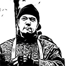

в:
Организации
Тёмное небо
Тёмное небо
(
暗い空会,,
Kurai Sora-Kai
), Организация дискорд сервера, возглавляемая
Wolfach
. На данный момент она не так многочисленна и состоит только из офицерского состава и неактивных членов.
Униформа
Официальной формой ассоциации Тёмного неба были: чёрная куртка-бомбер MA-1, такая как и у Вальхаллы из "Токийских Мстителей". На красной бирке писалось полное название ассоциации на ромадзи.
Предыстория
Был создан 11 сентября 2019 года, специально для фолловеров твича. Цель создания сервера - общение, веселье, получение контента. После основания DizzMant занял роль главы, Wolfach получил роль администратора. Спустя какое-то время на роль старшего модератора приходит Vitya.Fox. Сервер начал развиваться и к нашему времени в него входит около 40 человек, 14 из которых являются активными членами.
Структура
Тёмное небо имеет свою систему иерархии: номер 1 - президент, затем идёт вице-президент, после которого капитаны отрядов и их заместители. На данный момент в Тёмном небе всего 4 отряда.
Участники
Тёмное небо
Глава

Wolfach
Вице-президент

Korizza
Капитаны отрядов
Артём
Первый отряд

WoOty
Второй отряд
Baron pluton
Третий отряд
King of shadows
Четвёртый отряд